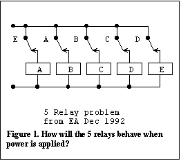
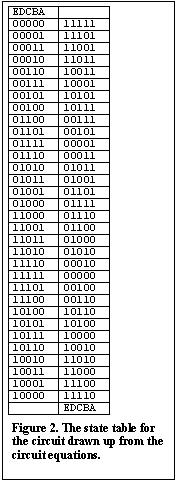
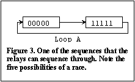
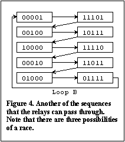
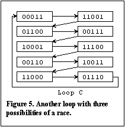
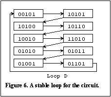

The five relay problem
Some time ago I came across this puzzle in the December 1992 issue of Electronics Australia magazine, in Peter Philips' 'Information Centre' column. The problem was to determine the behaviour of the five relays shown in Figure 1 after power is applied. You can see that as soon as the power is applied the relays will energise but the contacts will immediately all open and the relays will then all drop out. The process will then repeat itself. The result will be some sort of oscillatory action. This looked like an interesting problem to illustrate the application of logical design techniques so I thought I would put my solution on my web site.
The first step in the solution is to draw up a table showing all possible states of the five relays as shown in Figure 2. Since there are 5 relays there are 25 or 32 possible states. The usual notation of representing an on state by a '1' and an off state by a '0' is used and the entries are arranged according to a Gray code. The relays are represented by letters of the alphabet and these are the state variables for this circuit. The second column of the table is actually a separate column for each relay. The entries for the second column are constructed from the logic equations for each relay. The convention is that the relay contacts are shown in their normally unenergised condition so that a logic true contact is shown with an open circuit and visa versa for a logic false contact (the logic true contact is closed when the variable is energised). For example, the equation for the 'A' relay is: A = E', (the prime after the letter for the variable ( ' ) represents the inverse of the variable or normally closed contact).
This equation states that A is energised when E is unenergised. The equations for all the other relays are similar (ie. B = A', C = B', D = C', E = D'). Consider the right hand column for the A relay. A '0' is placed in this column wherever there is a '1' in the 'E' relay's column on the left side of the table and '1's are placed where there are '0's in the 'E' relay's column on the left side of the table. All the columns on the right hand side are filled in, in the same way using their respective logic equations. Notice that the right hand side of the table is labelled at the bottom and not at the top. The top of this column is unlabelled since in this example there are no input variables other than the relays themselves and the top of this column is reserved for external input variable names when these appear in the problem.
If you now consider what this table represents you will see that each entry on the right represents the excitation conditions for each of the relays given the instantaneous condition of the relays on the left hand side of the table. In other words the entries on the right are the next states of the relays from the states given by the entries on the left. Hence the table is called a State Table for the relay circuit since it shows all the states and next states for the circuit.
This problem is an example of an unstable asynchronous sequential system or state machine. Starting with any entry in the table, the next state of the relays can be written down by simply reading off the entry in the right hand column adjacent to it. By going to that entry in the left hand column, one can then read off the next state after that and so on. On doing this one finds that there are sequences of states that form loops. The relays will execute the successive states in one or other of the loops. The more general situation is that a state table will have a number of stable states and some unstable states. A flip flop would have two stable states but circuits can be devised that have numerous stable states.
The procedure of finding all the loops has been carried out in Figures 3 to 6. By following up all possible cases it is seen that there are four sequences of states through which the 5 relay system can oscillate. Consider the first sequence shown as loop 'A' in Figure 3. Initially all the relays will attempt to turn on, at which time all the relays will become deenergised and will then all turn off. If all the relays were perfectly identical and all had identical energisation and deenergisation times this condition would repeat indefinitely. However, in practice a race condition exists between the five relays and if one or two relays get left behind, the system will jump into one of the loops B, C or D.
Considering loops B and C in Figures 4 and 5, it is seen that there are still race conditions between three relays so there is an opportunity for the system to spontaneously hop into one of the other loops. In loop D, however, there is always only one relay changing state at any time. Hence, there is no race condition in this loop and this loop will be stable. The relays will quickly settle down in loop D and will continue to oscillate in the successive states of this loop indefinitely. Comparing this state by state with the waveforms given in Peter's solution in the January 1993 edition of EA shows that this is the solution reached by Peter.
Summary
To summarise, the logical design procedure for analysis is that you first identify all the variables, including the input, output and state variables, then all the logical relationships between the variables which you write in the form of logic equations and then you draw up a state table by mapping the circuit equations onto the state table. The resulting state table shows all possible states of these variables and their next states for all input conditions. Analysis, or tracing through, the state table then gives you all the possible ways the system can function. The logical analysis procedure is reversible and can be used for synthesis. Hence, given a desired result one can derive a circuit that will produce that result. However, of course there are additional considerations, beyond what has been described here, that have to be taken into account to achieve a problem free result when synthesising sequential circuits.
Simulation of the 5 relay puzzle
If you have access to a PLD design system such as the Altera MaxPlus II system you can demonstrate the behaviour of the relays with the simulator that is part of the system. I will show you the results (click on the underlined text for Figures 8 to 11 to see the results). Figure 7 is the circuit that has been used for the simulation. The multiplexer circuits are used to switch in the initial conditions for each loop. The simulator will of course allocate fixed delay values from its timing model so that the simulator will show continuous oscillations in each loop. Compare the successive values of the relays in Figures 8 to 11 with the values derived in Figures 3 to 6.
{kind=link}
A circuit constructed with real electromechanical relays will behave as described but I was interested to see how a circuit constructed with gate circuits would behave. So I programmed Figure 7 into my printed circuit board. I made provision for repetitive initialisation and followed the action on an oscilloscope. I had to provide additional buffering on output signals to prevent the oscilloscope leads from interfering with the experiment. I found that if the circuit was initialised in loops B or C the circuit quickly reverted to loop D. What I could see was that the asymmetry in the mark to space ratio in the waveforms produced in loops B or C resulted in a progressive shift in the phase of the waveforms until the circuit jumped into loop D. The waveforms in loop D are square waves. When I started the circuit in loop A, the circuit continued to run in this loop, without any sign of changing to another loop, throughout the time that I allowed before re-initialisation. The waveforms in this loop are also square waves but at a much higher frequency. This suggests to me that the delays in the interconnections in the EPM7128SLC device used in the printed circuit board have been very carefully equalised in the manufacturing process. The experiment made quite an impressive demonstration of this fact.
Return to Intelligent logic OR Navigation menu at the top of the page OR continue with Exclusive-OR Logic:
(Copyright) David N. Warren-Smith, CPENG
Digital Logic Systems, South Australia
21 September, 1998